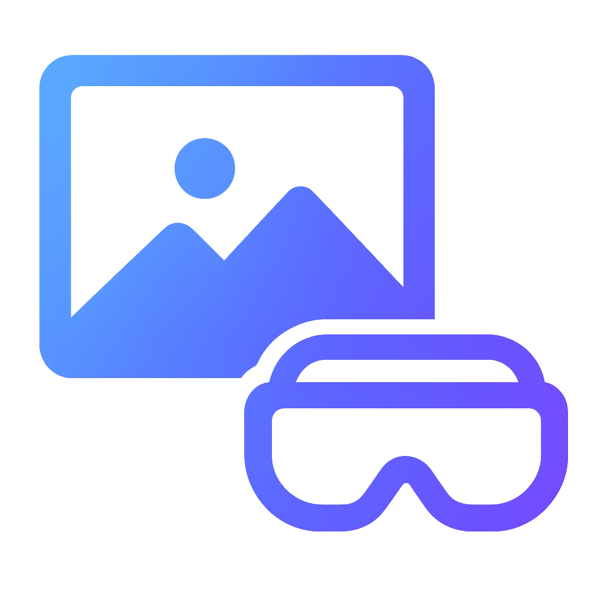

Aplicación de Realidad Aumentada (RA) con Unity y C# para dispositivos móviles
Grupo3
Materia: Tecnologías Inmersivas | Docente: ing. Mario Jose Platero Villatoro
Fecha: 11 de octubre de 2025
Nuestra aplicación de realidad aumentada (AR) está diseñada como una herramienta de apoyo para la planificación de galerías y exposiciones de arte. Permite a los artistas y curadores posicionar cuadros de manera virtual dentro de un entorno real, utilizando la cámara del dispositivo. De esta forma, pueden visualizar cómo se verían las obras en el espacio antes de montarlas físicamente, lo que facilita la organización, ahorra tiempo y reduce los costos logísticos. La app está dirigida principalmente a artistas, curadores, diseñadores de exposiciones y galerías de arte que buscan optimizar el proceso de montaje y presentación de sus obras.v
El sistema utiliza la cámara del dispositivo y técnicas de reconocimiento espacial para posicionar de manera correcta el marco en el entorno real, permitiendo al usuario desplazarse a su alrededor y experimentar una sensación de profundidad. Este tipo de aplicación demuestra el potencial de la RA como herramienta para el aprendizaje, la comunicación visual y la preservación de experiencias culturales y artísticas.
El proyecto también busca impulsar el desarrollo de competencias en programación, diseño 3D y experiencia de usuario, combinando arte y tecnología. Su implementación representa un paso hacia la integración de entornos virtuales con el mundo físico, promoviendo la innovación y la creatividad digital en contextos educativos y de divulgación tecnológica.

El proyecto consiste en desarrollar una aplicación de Realidad Aumentada (RA) para dispositivos móviles, utilizando Unity y C#. Esta aplicación permitirá a los usuarios visualizar un marco de foto en su entorno real mediante la cámara de su dispositivo, integrando de manera fluida el contenido digital con el espacio físico.
La experiencia está diseñada para ser interactiva, educativa y visualmente atractiva, brindando la sensación de que el marco realmente forma parte de su entorno.
Objetivo final: Permitir que cualquier usuario con dispositivo móvil experimente cómo se vería un marco de foto en su entorno real, de manera inmersiva, intuitiva y educativa.
Estructura y documentación claras para fácil mantenimiento.
Optimizada y empaquetada en formato APK para móviles.
Simulación tridimensional de imágenes para un efecto envolvente.
Accede a los archivos del proyecto en distintos formatos:
Aplicación
Proyecto (.RAR, 1 GB)
Instrucciones
Reporte
Presentaciónd
El proyecto demuestra habilidades en programación con C#, uso del motor Unity y desarrollo en Realidad Aumentada (RA), así como conocimientos en diseño 3D y desarrollo móvil multiplataforma. Se logra una experiencia interactiva, educativa y visualmente atractiva, que puede servir como base para proyectos más complejos y aplicaciones prácticas en RA.
Además, este trabajo refleja la integración de distintas áreas tecnológicas, desde la creación de modelos tridimensionales hasta la implementación de interacciones dinámicas y reconocimiento del entorno real mediante la cámara del dispositivo. La correcta sincronización entre software y hardware permite que los elementos virtuales se perciban como parte del espacio físico del usuario.
El proyecto también fomenta el aprendizaje autónomo y la experimentación con tecnologías inmersivas, fortaleciendo competencias en diseño de experiencias digitales, optimización de rendimiento en tiempo real y usabilidad móvil. Gracias a ello, se convierte en una demostración del potencial de la Realidad Aumentada como herramienta para la educación, la comunicación visual y la innovación tecnológica en entornos académicos y creativos.
En conjunto, “Uniendo Realidades” no solo evidencia el dominio técnico de sus desarrolladores, sino también una visión orientada a la creación de experiencias digitales significativas que conectan el mundo físico con el virtual, abriendo nuevas posibilidades para futuras investigaciones y desarrollos en el campo de la RA.